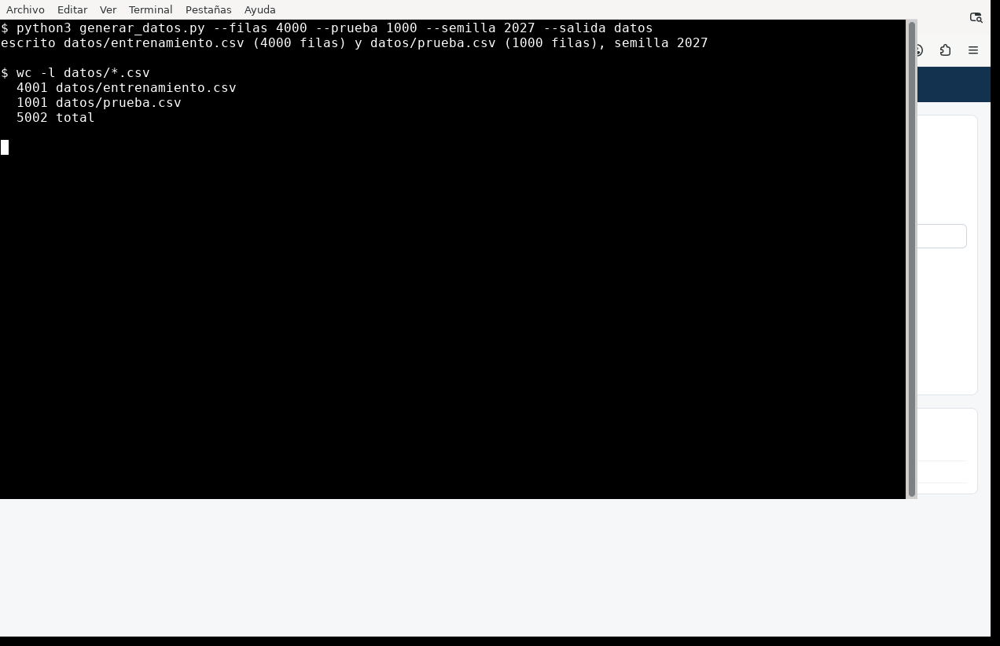
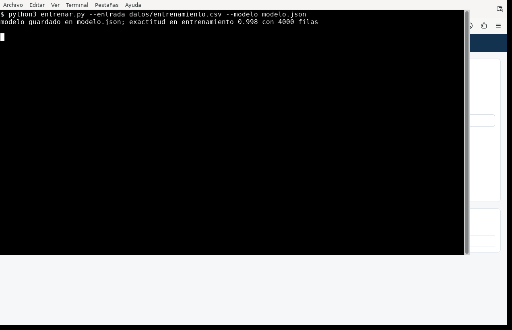

VirtualBox + OPNsense + Alpine Linux: tres zonas de servicio aisladas, una zona de administración con escritorio gráfico, NAT de salida, una aplicación web real con su base de datos protegida, y publicación controlada del servicio por NAT/PAT
👨🏫 Docente: Ing. Rodolfo Cañas Cervantes🏛️ Universidad de la Costa (CUC)📅 Unidad 3 · Actividad 2 (10%) · Corte 3 · 2027-1
Laboratorio C2 — Clasificador NDR: separar tráfico normal de tráfico de ataque
Objetivo. Al terminar tienes un clasificador entrenado con datos sintéticos, sus métricas medidas sobre un conjunto
que no vio al entrenar, y una decisión razonada sobre qué error te cuesta más: dejar pasar un ataque o molestar con una falsa alarma.
Curso
Seguridad en Redes · Corte 3 · 10 % de la nota
Tiempo estimado
3 h (con la VM ya encendida)
Prerrequisitos
VM del curso, Python 3, el paquete del laboratorio en ~/labs/lab07, que descarga asur-lab iniciar lab07 con sus ruedas de instalación sin internet Si el catálogo publicado no responde, el curso entrega una copia local del catálogo y de los paquetes: export ASUR_LAB_URL=file://$HOME/catalogo-2027-1. Ademas, el cliente asur-lab comprueba el catalogo al instalar: si hay una version nueva, se actualiza solo; con una copia local en file:// no puede actualizarse y lo avisa y se repite el mismo comando.
Entorno
Aislado. Los datos son sintéticos: no provienen de ninguna red real ni de ninguna empresa.
Paquete
El laboratorio se baja del catálogo de la plataforma con asur-lab iniciar lab07. Si el cliente responde que el laboratorio todavía no está activo, su paquete se está publicando: no es un error del ejercicio.
Los datos se generan con un script del paquete, así que se puede repetir el experimento y comparar. No se usan capturas de tráfico reales de terceros: no hacen falta para aprender el método y no sería ético usarlas sin permiso.
Salida esperada: la instalación termina sin errores y se imprimen dos versiones. Captura: la instalación y las versiones.
A.2 Generar el conjunto sintético
Genera entrenamiento y prueba con el script del paquete.
python3 generar_datos.py --filas 4000 --prueba 1000 --semilla 2027 --salida datos
Captura prevista para la prueba de la Fase 5: pantalla del paso «A.2 Generar el conjunto sintético» con la salida real. Se guarda en imagenes/C2-02.png.

Captura real del C2-02, tomada en la VM del curso.
Cuenta las filas y la proporción de clases de cada archivo.
python3 - <<'PY'
import csv, collections
for f in ("datos/entrenamiento.csv", "datos/prueba.csv"):
with open(f, newline="", encoding="utf-8") as a:
filas = list(csv.DictReader(a))
print(f, len(filas), dict(collections.Counter(x["etiqueta"] for x in filas)))
PY
Salida esperada: dos archivos con 4000 filas en total y una proporción de clases que no sea 99 a 1.
Captura: los dos conteos.
Si una clase tiene el 99 % de las filas, un modelo que diga siempre «normal» acierta casi todo y no sirve para nada. Antes de mirar el modelo, mira el reparto.
A.3 Qué separa a las dos clases
Compara las medias de las variables por clase y anota las tres que más se diferencian.
python3 - <<'PY'
import csv, numpy as np
with open("datos/entrenamiento.csv", newline="", encoding="utf-8") as f:
filas = list(csv.DictReader(f))
cols = [c for c in filas[0] if c != "etiqueta"]
for etiqueta in ("normal", "ataque"):
sub = [x for x in filas if x["etiqueta"] == etiqueta]
print(etiqueta, {c: round(float(np.mean([float(x[c]) for x in sub])), 1) for c in cols})
PY
Salida esperada: una tabla de medias por clase donde al menos tres variables muestran diferencia clara.
Captura: la tabla y las tres variables que elegiste.
Captura prevista para la prueba de la Fase 5: pantalla del paso «B.1 Entrenar con una parte y medir con la otra» con la salida real. Se guarda en imagenes/C2-03.png.

Captura real del C2-03, tomada en la VM del curso.
Predice el conjunto de prueba y guarda las predicciones.
Salida esperada: modelo.json, predicciones.csv y metricas.json con exactitud, precisión, sensibilidad y F1 por clase.
Captura: la salida de evaluar.py con la matriz.
Una exactitud alta no basta: si el 95 % del tráfico es normal, acertar el 95 % puede significar no detectar nada. Mira siempre la sensibilidad de la clase «ataque».
B.2 Mover el umbral y pagar el precio
Vuelve a evaluar con tres umbrales distintos.
for u in 0.2 0.5 0.8; do python3 evaluar.py --real datos/prueba.csv --predicciones predicciones.csv --umbral $u --salida metricas-$u.json; done
Compara los tres resultados en una tabla.
python3 - <<'PY'
import json
for u in ("0.2", "0.5", "0.8"):
m = json.load(open("metricas-%s.json" % u))
print(u, m["matriz"], m["sensibilidad"], m["f1"])
PY
Salida esperada: al bajar el umbral sube la detección y suben las falsas alarmas; al subirlo, lo contrario.
Captura: la tabla de los tres umbrales.
B.3 Decidir con argumentos
Escribe en el informe qué umbral eliges y por qué, con estas tres ideas: cuántas alertas puede revisar una persona al día,
qué cuesta un ataque no detectado y qué pasa con la confianza del equipo cuando la mayoría de las alertas son falsas.
Entregable y comprobación
Entrega informe-c2.md con: el reparto de clases de los dos archivos, las tres variables que separan, la matriz de confusión,
la tabla de los tres umbrales, el umbral elegido con su justificación y una frase sobre qué harías para conseguir más datos de ataque sin inventarlos.
asur-lab check c2-ndr comprueba que los dos archivos existen con el número de filas declarado, que el modelo carga, que las predicciones
cubren todo el conjunto de prueba, que las métricas del informe coinciden con las recalculadas por el verificador a partir de tus propios archivos y que el modelo no
predice una sola clase. No publica el valor esperado de las métricas: señala qué paso revisar.
Calificación. Los criterios y los pesos de esta actividad están por definir: los decide el docente. Esta guía fija qué se entrega y qué comprueba el verificador; no fija niveles ni porcentajes.
Errores frecuentes
Síntoma
Causa habitual
Qué revisar
Exactitud del 99 % y ninguna detección
Clases desbalanceadas y modelo que siempre dice «normal»
La matriz de confusión y la sensibilidad de la clase ataque